Revolutionizing Japanese Learning Through Natural Immersion
Transform authentic Japanese content into interactive learning materials with spaced repetition and cutting-edge AI technology. Master the language through immersive, personalized study sessions.
 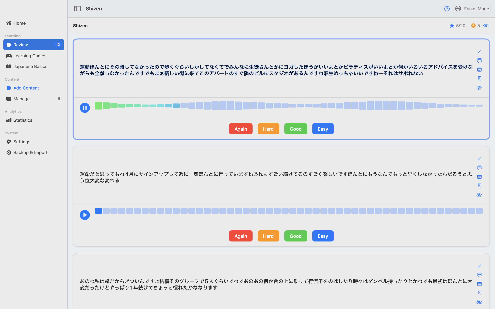
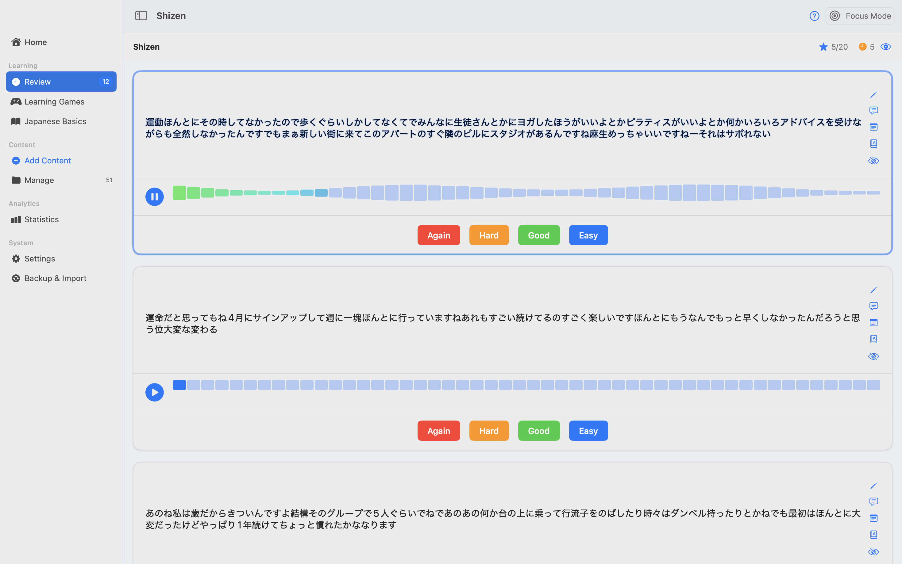


 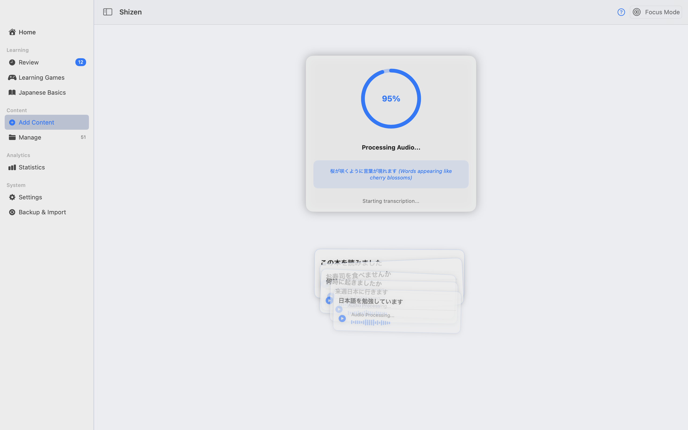
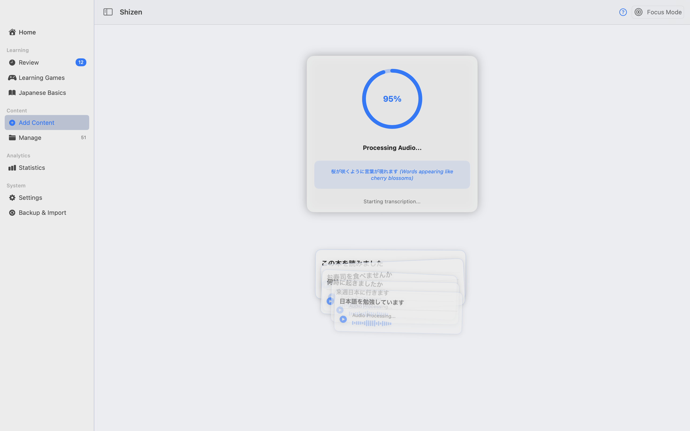

 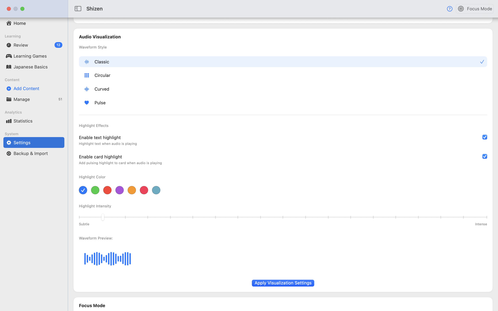
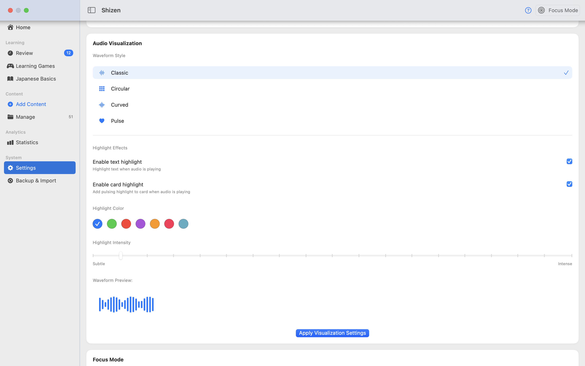


 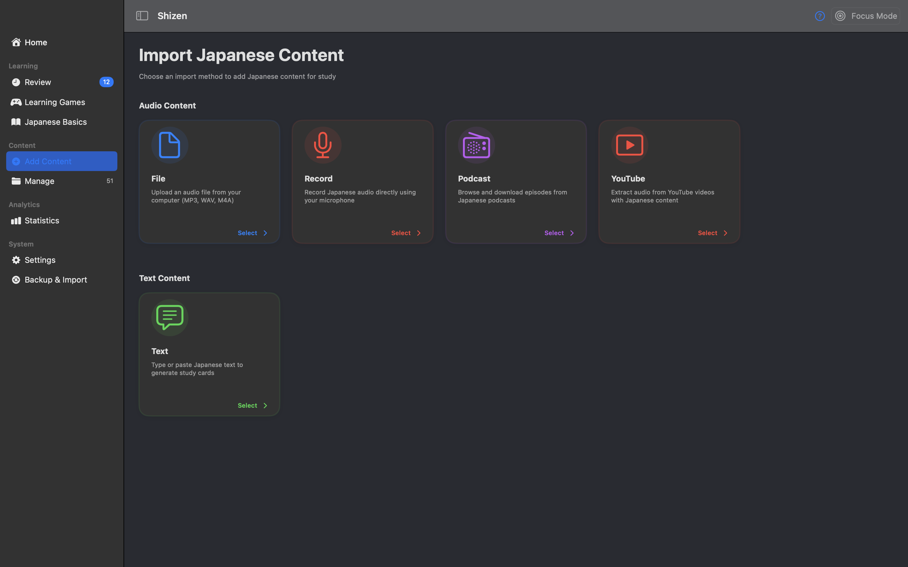
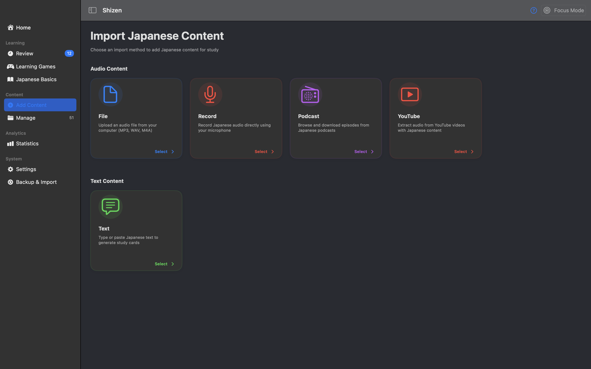
 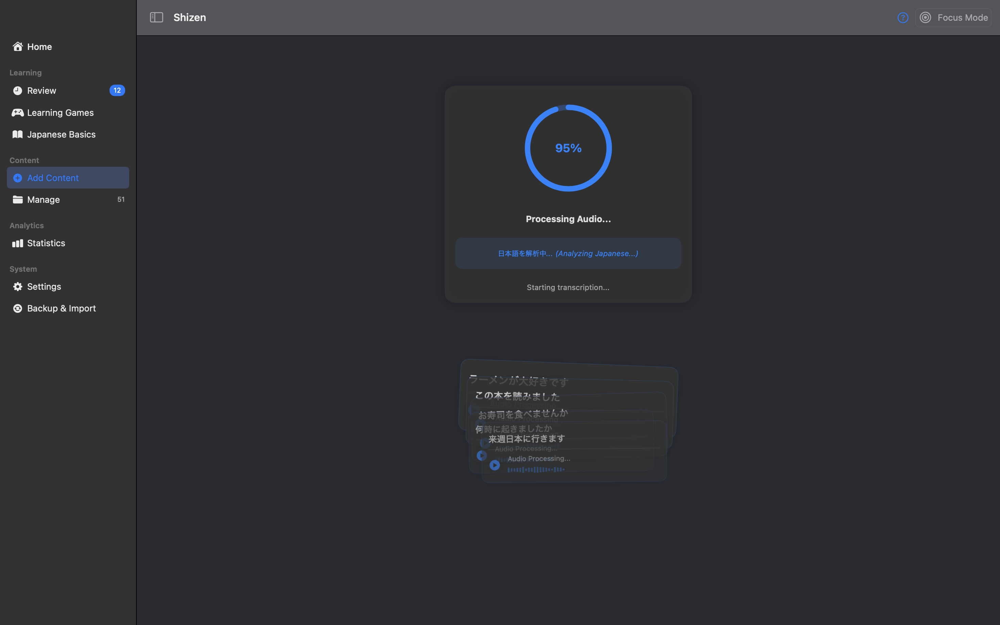
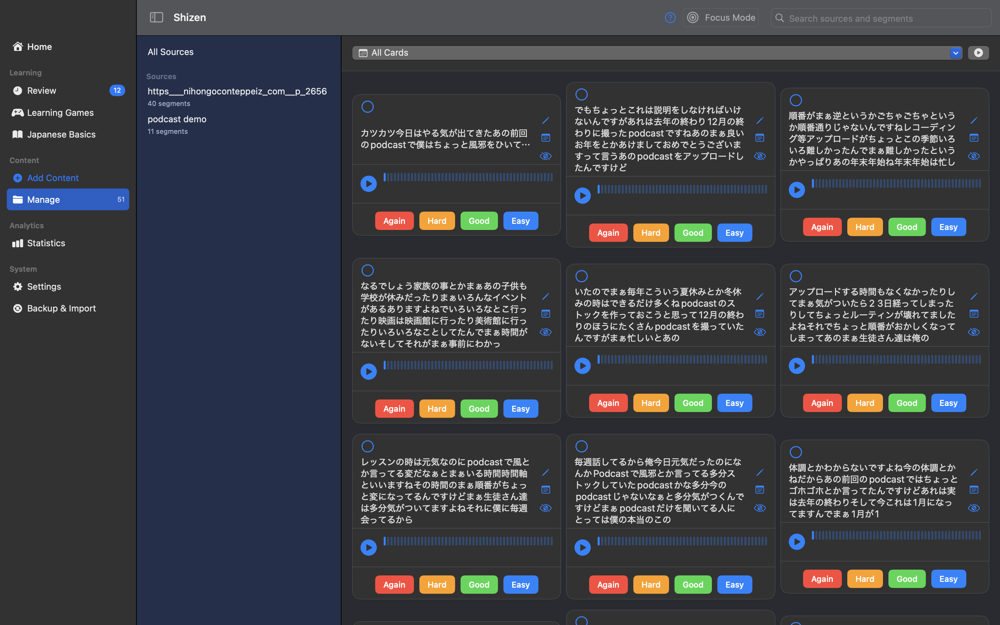
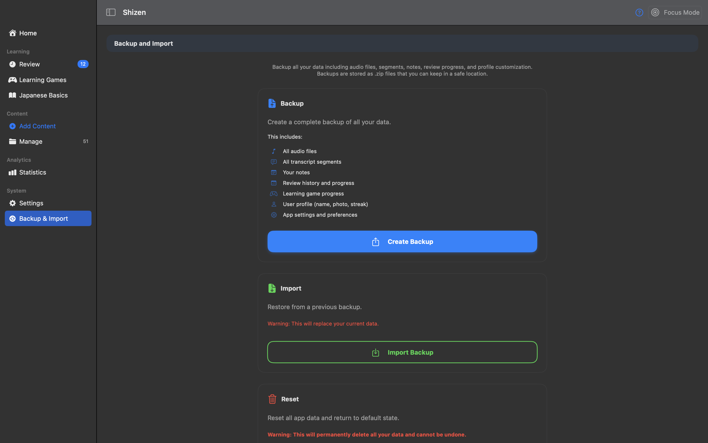
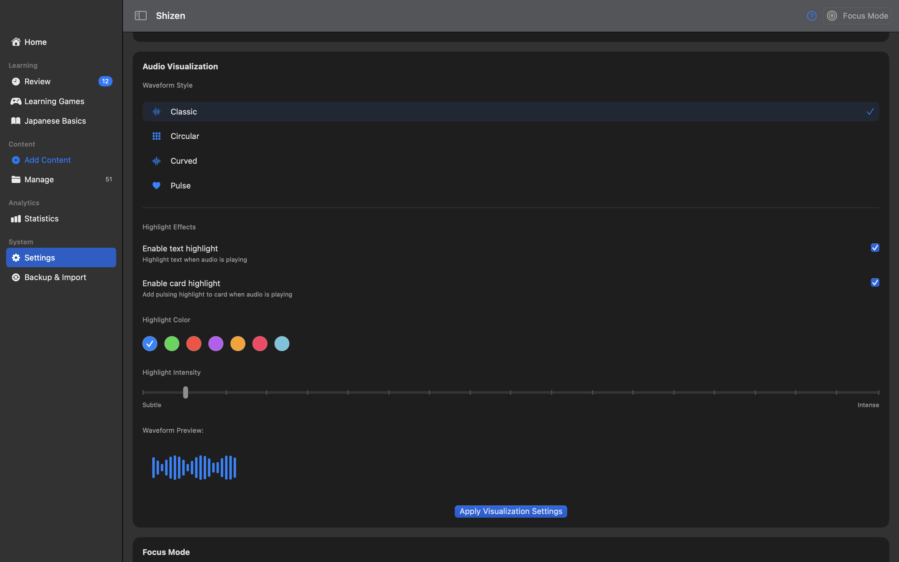
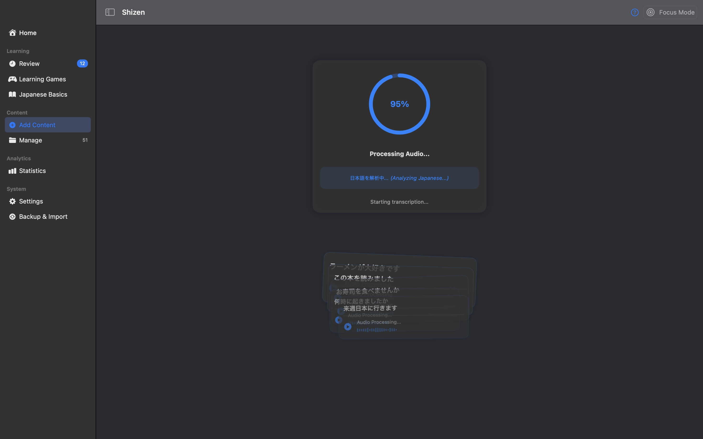
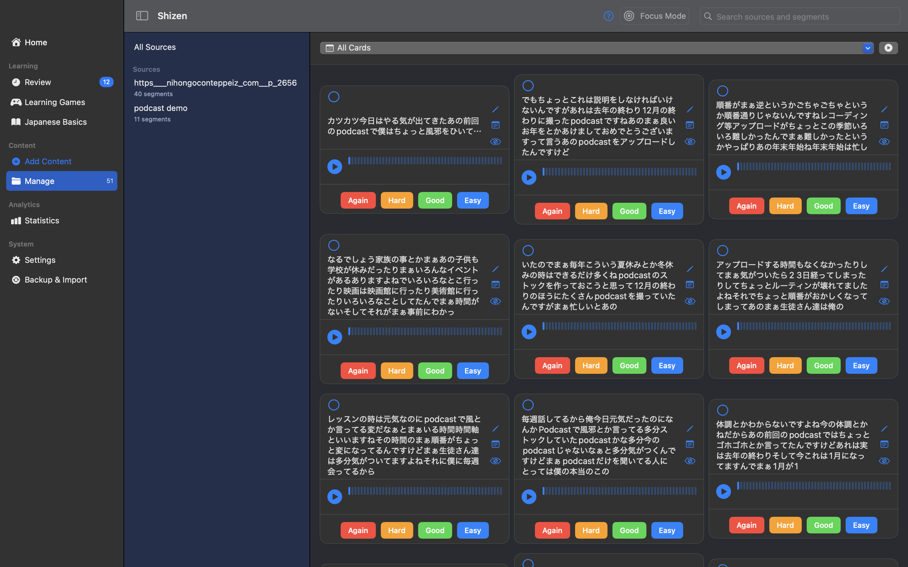
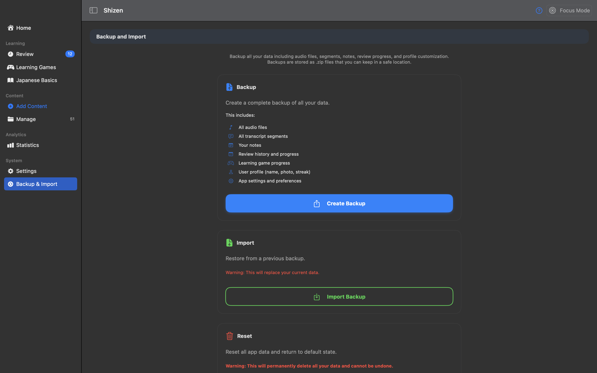
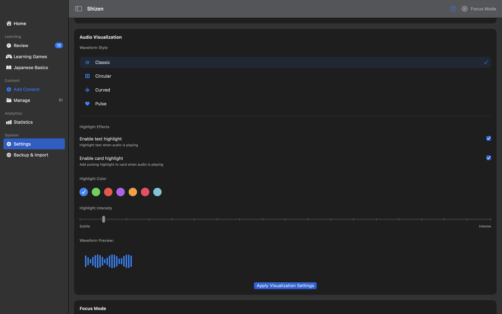
What is Shizen?
Transform your Japanese learning journey with Shizen - an advanced macOS app that turns authentic content into personalized learning materials.
Choose Content
Import your favorite Japanese podcasts, videos, or audiobooks as learning material.
Smart Processing
AI-powered segmentation creates perfect learning units from your content.
Learn Naturally
Master Japanese through adaptive spaced repetition and interactive exercises.
Why Choose Shizen?
| Traditional Apps | Shizen |
|---|---|
| Generic premade content | Your chosen authentic content |
| Isolated vocabulary | Natural context learning |
| Fixed learning path | Adapts to your progress |
| Monthly subscriptions | One-time purchase |
App Features
Transform your Japanese learning journey with powerful tools
Japanese Basics
Master Hiragana, Katakana, and essential grammar patterns through interactive lessons.
Interactive Writing
Practice Hiragana with instant feedback and pronunciation guides.
Content Import
Import audio files, podcasts, and videos for personalized learning.

Adaptive SRS
Smart spaced repetition that adapts to your learning pace.
Text Analysis
Automatic word segmentation and card generation from your content.

Audio Processing
Smart audio segmentation and transcription for perfect learning units.
Interactive Learning Tools
Master Japanese through engaging exercises and immersive practice
Multiple Choice
Test your listening comprehension with carefully crafted questions based on authentic Japanese audio.
Missing Word
Enhance your listening skills by identifying missing words in Japanese sentences.
Word Arrangement
Build your grammar skills by arranging words to form correct Japanese sentences.
Why Shizen Is Different
A powerful one-time purchase app for natural Japanese learning - no subscriptions
Audio Processing Engine
Import Japanese audio from any source and automatically segment it into perfect learning units for focused practice.
Speech-to-Text Transcription
Utilize advanced speech recognition to create accurate Japanese transcripts that enhance reading and listening skills.
Spaced Repetition System
Master Japanese content through scientifically proven memory techniques that optimize retention and recall.
Core Features
A complete system for immersive Japanese learning
Content Import
Import any Japanese content - YouTube videos, podcasts, audiobooks, or text. Your learning, your choice.
AI Processing
Smart audio segmentation and transcription turns your content into perfect learning units.
Adaptive SRS
Personalized spaced repetition that evolves with your learning progress.
Progress Tracking
Detailed analytics and insights to optimize your learning journey.
Learning Science Behind Shizen
Research-backed approaches that optimize your Japanese acquisition
Spaced Repetition
Shizen implements the scientifically-proven spacing effect, scheduling reviews at optimal intervals to maximize long-term retention. Studies show this approach can increase retention by up to 200% compared to traditional cramming.
Contextual Learning
Research shows vocabulary acquired in context has better recall and more accurate usage. Shizen's approach keeps words and phrases in their natural context, enhancing both comprehension and appropriate usage.
Active Recall
Shizen employs active recall techniques through its review system, requiring you to actively retrieve information rather than passively recognize it. This strengthens neural pathways and improves memory formation by up to 150%.
Interleaved Practice
Shizen intelligently mixes different types of content and review formats, implementing interleaved practice which has been shown to improve problem-solving abilities and transfer of learning by 40% compared to blocked practice.
The Forgetting Curve & Spaced Repetition
Shizen's spaced repetition system strengthens memory through strategically timed reviews. Each review increases long-term retention and extends the interval before the next review is needed.
Content Management
Powerful tools to organize and track your learning journey
Smart Organization
Automatically organize content by difficulty, topics, and progress. Keep your learning materials structured and easily accessible.
Progress Tracking
Monitor your learning journey with detailed statistics and insights. Track retention rates, study time, and mastery progress.
Backup & Sync
Keep your progress safe with automatic backups and easy restoration. Never lose your valuable learning data.
Recent Updates
We're constantly improving Shizen with new features and refinements
Enhanced Text Analysis
Added advanced text highlighting and annotation features to make reading comprehension easier and more intuitive.
New Game Modes
Introduced two new interactive learning modes: Word Arrangement Exercise and Multiple Choice Quizzes.
Performance Improvements
Significant speed enhancements for audio processing and transcription with reduced memory usage.
Technical Specifications
Built with performance and reliability in mind
Platform
Native macOS app built with SwiftUI for optimal performance
Audio Support
MP3, M4A, AIFF, WAV and more audio formats
System Requirements
macOS 12.0 (Monterey) or later, Apple Silicon optimized
Performance
Optimized for smooth playback and instant response
Experience Shizen in Action
Watch how Shizen transforms Japanese content into an effective learning experience
Feature Highlights
Audio Processing
Watch how Shizen intelligently segments and processes Japanese audio content.
SRS Review System
Experience our adaptive spaced repetition system that evolves with your progress.
Learning Games
Explore interactive exercises designed to enhance your Japanese comprehension.
Complete Workflow Demo
See the full process from importing content to mastering Japanese through immersive learning. This comprehensive demo shows how Shizen helps you learn naturally from authentic content.
Download Shizen
Start your immersive Japanese learning journey today
Native macOS App
For macOS 12 (Monterey) and above
Download for MacVersion 1.0 • 98MB • March 15, 2024
✓ No data collection • ✓ Local content • ✓ Regular updates • ✓ Open source
Installation Guide
- Download Shizen.dmg and double-click to open
- Drag Shizen to Applications folder
- Right-click Shizen and select "Open" (first time only)
First-time security prompt is normal for independent developers.
The Future of Shizen
Our roadmap for expanding accessibility and enhancing features
Enhanced Features
Advanced text analysis, community content sharing, and expanded learning games. Making Japanese immersion learning even more effective and engaging.
Windows Support
Native Windows application with full feature parity. Experience the same powerful learning tools on your Windows PC.
Mobile Apps
Native iOS and Android apps for learning on the go. Take your Japanese studies anywhere with seamless progress syncing across all your devices.
Support Development
Hey! 👋 Shizen is being developed by a single developer (that's me!) who runs entirely on coffee and a passion for language learning
Fuel the Development
Every cup of coffee counts towards bringing Shizen to more platforms! Your support will help bring Windows and mobile apps to life, and maybe keep me awake long enough to add even more cool features.
Fun fact: This app has consumed approximately 427 cups of coffee during development. Results may vary, but caffeine levels are guaranteed to be high! ☕️
Buy Me a Coffee